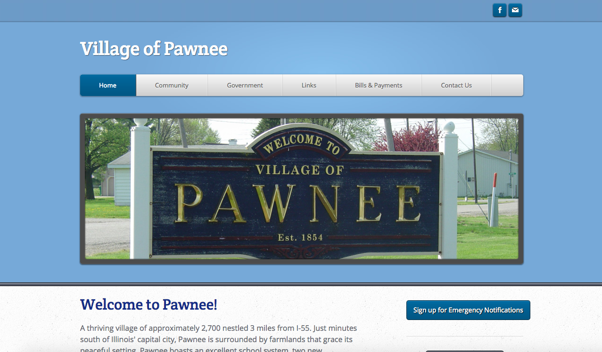

I’m taking an online course (UX and Web Design Master Course by Joe Natoli on Udemy) to learn about the UX research and design process, and needed to pick a project to work on. I’m a fan of the show Parks and Recreation, so I decided to make some updates to the faux government site for the fictional town of Pawnee, Indiana*. This site was made by NBC while the show was airing, and needs some improvements.
I’m treating this as a real situation, and since I wasn’t able to speak with actual users I referenced the show to determine what updates would be most effective.
Currently I’m finishing the research for what needs to be updated and how that should happen, and starting on simple mockups in Photoshop. After that’s completed I’ll evaluate whether those mockups cover everything that they’re supposed to, and if so, I’ll start making more advanced wireframes in Sketch.
Users of the site are mainly citizens of Pawnee, and secondary users are government officials and citizens from similarly-sized and nearby cities, and people who are considering moving to Pawnee.
Shauna - Shauna is in her late 30s, single, and a citizen of Pawnee. She works as a journalist for the local newspaper, The Pawnee Journal. She would like to have a good resource for events happening in Pawnee. She needs this information to be able to do her job well, and she also wants to be able to meet fellow citiens.
Lawrence - Lawrence is in his early 40s, single, and a citizen of Pawnee. He is an outspoken attendee of town hall meetings, and would like more ways to make sure his opinions are heard.
I've been using four sites for this project:
1. the current Pawnee, Indiana site
2. the website of the city of Pawnee, Illinois
3. the website of the city of Pawnee, Oklahoma
4. and Nashville, Tennessee's website
A government website should focus on usability first because all users need to be able to use the site. I'm using the Section 508 site to make sure everything on the updated site meets the guidelines.
After researching, I was able to determine three main areas that could particularly benefit from improvement.
Main Page - Using the other three city sites as references, I moved the navigation bar under the "City of Pawnee" title. I also made adjustments so the new page is clearer and shows news and events (both have buttons that lead users to read more). I also added a "welcome" section, because having that added to the friendliness of the other two Pawnee's sites.
Events Page - The events page has been updated so it has a calendar on the left side and a list of events on the right side - it was based on the calendar/events on Nashville's site. The user can click on a specific date on the calendar to see the list of events on that day, or they can click on the "view events in list form" button (at the top for people using screen readers), or the "view all events" button under the specific day's events.
Contact Us Page - I referenced the Pawnee, IL site and decided to add the new request form to the Contact Us page. It will allow users to submit their comments, and has an important disclaimer underneath to absolve the city of any liability for following through on the messages they receive.
*The town of Pawnee and any characters, places, or departments referenced on this page are fictional and owned by NBC Universal (please don’t sue me!)